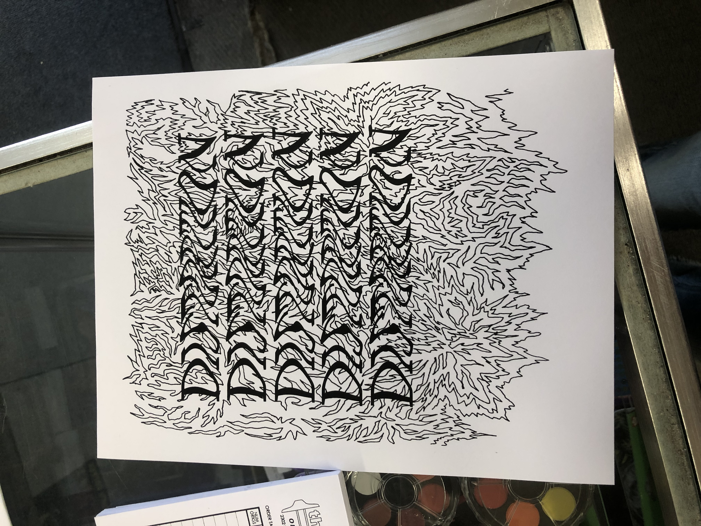

About
Jessie is an artist and designer located in Berkeley, California and is a third year student at UC Berkeley studying English Literature and Art Practice. She is most passionate about drawing, graphic design, visual design, and has recently started adding her designs to clothes. Jessie is most fond of drawing with black ink. In her work she explores chaos, balancing maximalism and minimalism, movement, and pattern. She has often been told that her work has a psychedelic feeling to it despite not being influenced by drugs. Jessie is also design lead for UC Berkeley's premiere music magazine, the B-side. When she is not producing art, Jessie is putting together designs for people and clubs. Her artwork is regularly posted on instagram @how_to_steal
Jessie's work is usually first drawn in a sketchbook and then scanned, transferred onto Adobe Illustrator, edited, and printed. Below is a montage of some of Jessie's work.
For a more intellectual perspective on Jessie's artwork, hear Jessie's roommate and friend, Yasaman Mohammadi, also a third year student at UC Berkeley, speak about Jessie's work:
Jessie's artwork is sold in print for around $15 each. Reach her via email @jyangstarr@gmail.com or instagram @how_to_steal to buy some art.